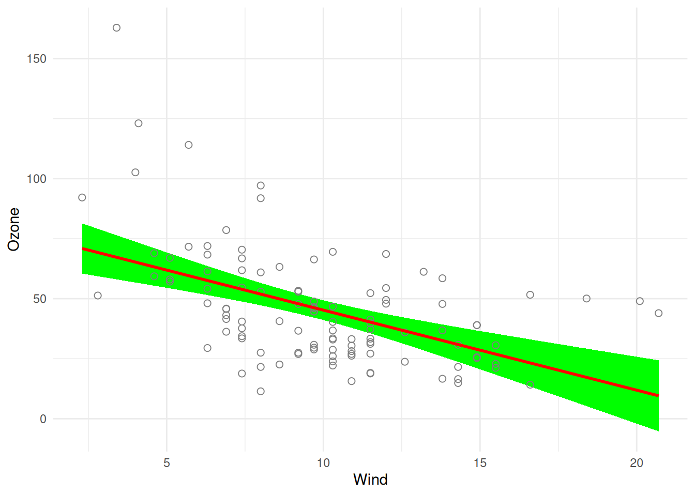

visreg 3.0 includes breaking changes. For migration details, see:
https://pbreheny.github.io/visreg/articles/migrating-to-3-0.htmlVersion 3.0 of visreg is a breaking release. This article explains what changed, why, and how to update your code. If you’d rather not update your code right now, see Keeping the old behavior below for how to keep using the pre-3.0 version.
What changed, and why
visreg is old enough that it accumulated three separate plotting backends over the years: base R graphics, lattice, and (added later, on top of the other two) ggplot2. Keeping all three in sync as features were added became increasingly difficult, and most users only ever used the ggplot2 output anyway (via gg = TRUE). In 3.0, the base R and lattice plotting code has been removed entirely: plot.visreg() now always builds and returns a ggplot2 object, which you can further modify with +, just as you would any other ggplot2 plot. The gg argument is gone because there is no longer a choice to make.
At the same time, the package’s internal and user-facing naming was inconsistent — a mix of camelCase, dotted.names, and snake_case left over from different eras of the codebase. 3.0 standardizes everything to snake_case. Most of this was internal and invisible to users, but a handful of user-facing argument names changed as a result (see the table below). A few arguments that only made sense for the old lattice/base-R backends (panel spacing, legend toggling) have been removed, since ggplot2 handles these automatically. type = "effect", a deprecated alias for type = "contrast" that had been printing a warning for years, has also been removed for good.
Separately, visreg() is now stricter about a common source of misleading plots: if you plot the main effect of a variable that participates in an interaction, without using by or cond to address the interaction, visreg now always warns you (previously this only happened in some cases). This isn’t a rename, but it’s a behavior change worth knowing about if you see new warnings after upgrading.
Renamed and removed arguments
| Old (≤ 2.8.1) | New (≥ 3.0) | Where | Notes |
|---|---|---|---|
gg |
(removed) | plot.visreg() |
Plots are always ggplot2 now; there’s nothing to toggle. |
line.par |
line |
plot.visreg() |
|
fill.par |
fill |
plot.visreg() |
|
points.par |
points |
plot.visreg() |
|
print.cond |
print_cond |
plot.visreg() |
|
strip.names |
strip_names |
plot.visreg() |
|
legend |
(removed) | plot.visreg() |
ggplot2 draws a legend automatically when one is needed; suppress it with + ggplot2::theme(legend.position = "none"). |
whitespace |
(removed) | plot.visreg() |
Controlled panel spacing in the old lattice backend; use standard ggplot2/facet_grid() mechanisms if you need to adjust spacing. |
xtrans |
(removed) | visreg() |
|
type = "effect" |
type = "contrast" |
visreg(), visreg2d()
|
The deprecated alias has been fully removed; contrast is the only spelling now. |
visregList() |
visreg_list() |
top-level function | The function and the S3 class it returns ("visregList" → "visreg_list") were both renamed. |
If you were passing any of the old dotted/camelCase names positionally rather than by name, that will still work — only the names themselves changed, not the argument order.
Renamed columns in the returned object
If your code reaches into the object returned by visreg() directly (rather than just plotting it), note that the columns of the fit and res data frames were also renamed to snake_case:
| Old | New |
|---|---|
$fit$visregFit |
$fit$visreg_fit |
$fit$visregLwr |
$fit$visreg_lwr |
$fit$visregUpr |
$fit$visreg_upr |
$res$visregRes |
$res$visreg_res |
$res$visregPos |
$res$visreg_pos |
For example:
fit <- lm(Ozone ~ Solar.R + Wind + Temp, data = airquality)
v <- visreg(fit, "Wind", plot = FALSE)
head(v$fit[, c("Wind", "visreg_fit", "visreg_lwr", "visreg_upr")]) Wind visreg_fit visreg_lwr visreg_upr
1 2.300 70.88886 60.40958 81.36815
2 2.484 70.27548 60.01535 80.53561
3 2.668 69.66210 59.62023 79.70397
4 2.852 69.04872 59.22417 78.87327
5 3.036 68.43534 58.82708 78.04360
6 3.220 67.82196 58.42892 77.21500A worked example
Old (2.8.1 and earlier) code that customized the appearance of a plot might have looked like this:
visreg(fit, "Wind", gg = TRUE,
line.par = list(col = "red"),
fill.par = list(fill = "green"),
points.par = list(cex = 2, pch = 1)
)The 3.0 equivalent drops gg = TRUE (no longer needed) and renames the three styling arguments:
visreg(fit, "Wind",
line = list(color = "red"),
fill = list(fill = "green"),
points = list(size = 2, shape = 1)
)
Note that the values passed to line/fill/points are ggplot2 aesthetics (color, size, shape, …), not base R par() names (col, cex, pch) — this was already true whenever gg = TRUE was used pre-3.0, so it should look familiar if you were already using the ggplot2 backend. See Graphical options for details.
Still in progress
3.0 is still being finished, and this article will be updated as the remaining pieces land:
-
Mixed models. Prediction and standard-error handling for
lme4/nlme/glmmTMBmodels is being reworked, and the mixed models article hasn’t been updated to reflect the newpredictargument tovisreg()yet (an escape hatch for passing arguments likere.formthrough to the model’s ownpredict()method). Don’t be surprised if this area continues to change. -
visreg2d(). The 2D surface-plotting functions are being rethought and, unlike the rest of the package, still use the old base R plotting code and naming conventions in places. They are not yet part of the ggplot2-only, snake_case cleanup described above.
Keeping the old behavior
If you’re not ready to update your code, you don’t have to: the last CRAN release before these changes, version 2.8.1, remains available and can be installed alongside or instead of the current version:
remotes::install_version("visreg", "2.8.1")